Regression comparison
Download resultsDataset
Training setting
Repulsion weight
Repulsion location
Compare repulsion locations
Method
Random points redraw every step and exclude all training inputs. Training and random use B points; combined uses 2B. Prediction axes match within each DE or BDKN row.
Functional repulsion
BetterWorse · relative rank within each column
DE
| Repulsion inputs | RMSE | NLL | Training seconds |
|---|---|---|---|
| Training | 0.75921 | 217.94526 | 6.32 |
| Random | 0.89232 | 58.17453 | 6.73 |
| Training + random | 0.65013 | 111.72383 | 6.93 |
BDKN
| Repulsion inputs | RMSE | NLL | Training seconds |
|---|---|---|---|
| Training | 0.76177 | 12.38295 | 6.45 |
| Random | 0.83036 | 7.42264 | 6.89 |
| Training + random | 0.65231 | 7.02767 | 7.06 |
Stage 1 · total loss and data fit
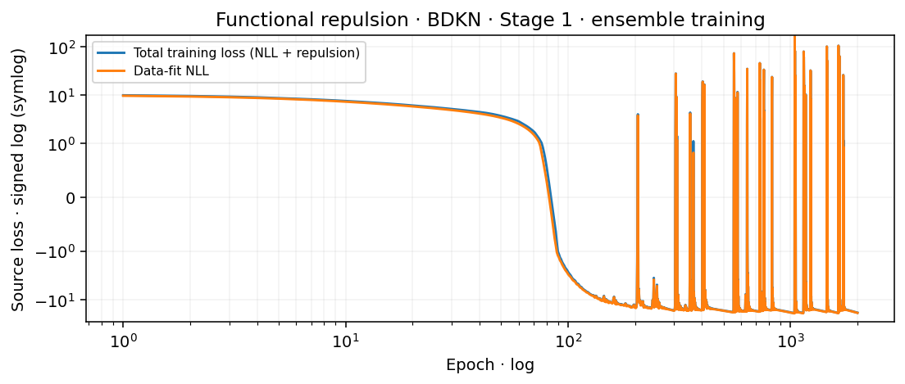
X: log · Y: signed log
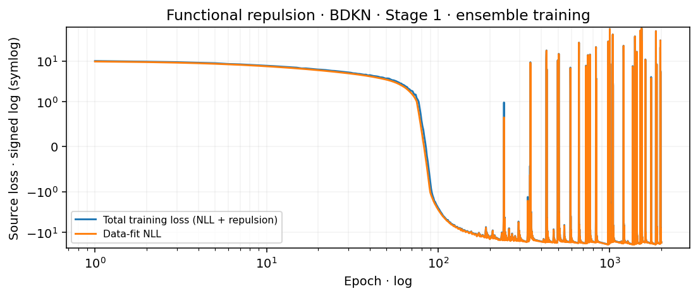
X: log · Y: signed log
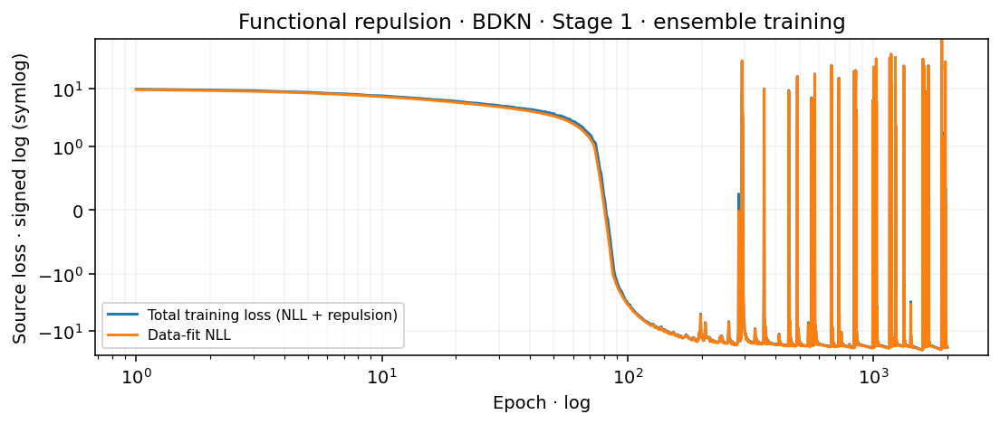
X: log · Y: signed log
Repulsion loss R only
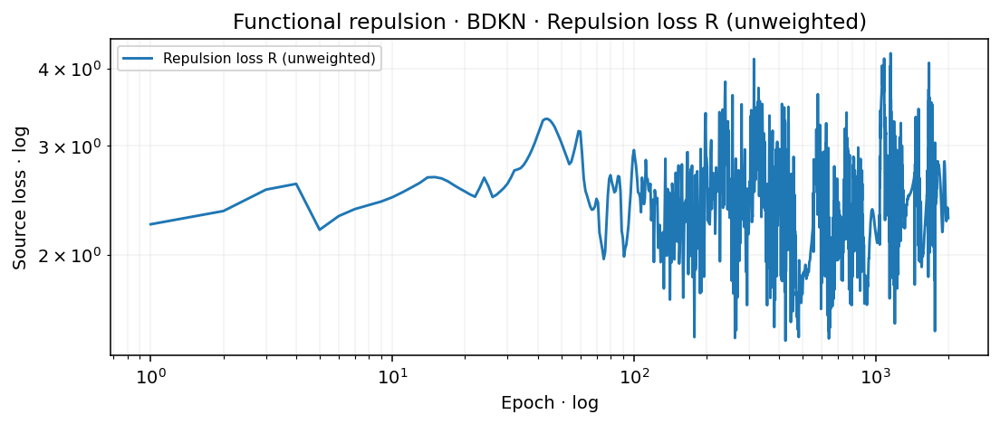
X: log · Y: log
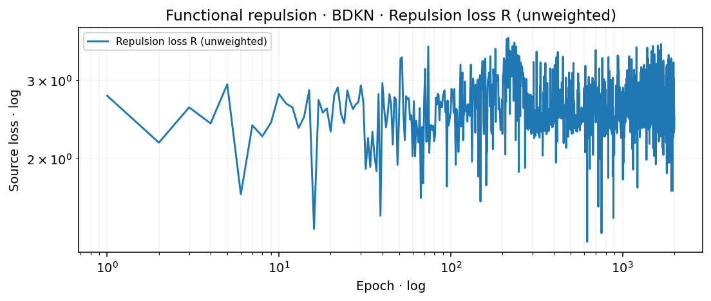
X: log · Y: log
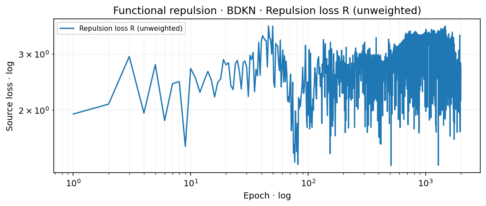
X: log · Y: log
Stage 2 · Bayesian marginal NLL
X: log · Y: signed log
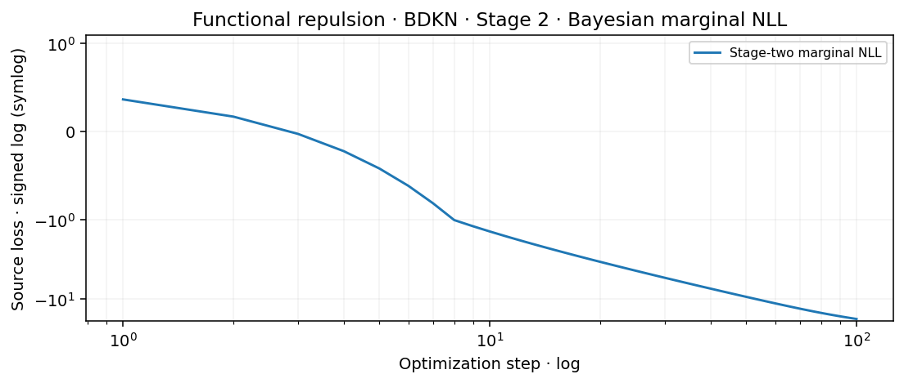
X: log · Y: signed log
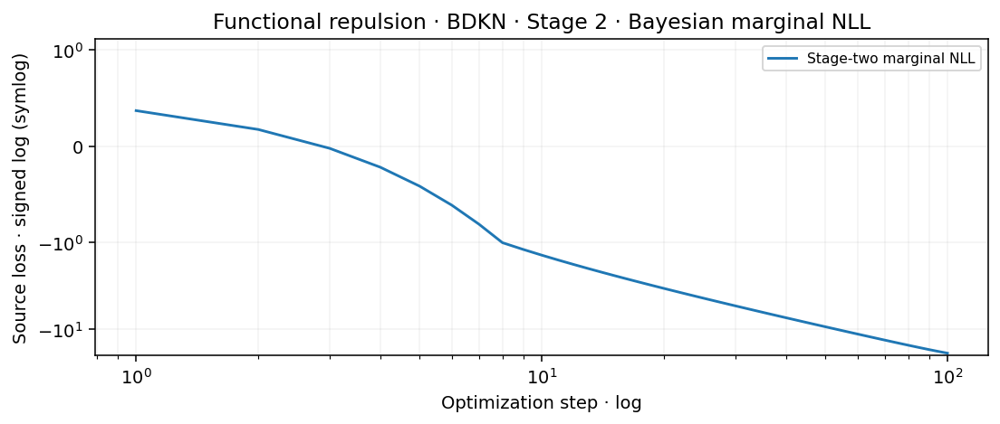
X: log · Y: signed log
First-order repulsion
BetterWorse · relative rank within each column
DE
| Repulsion inputs | RMSE | NLL | Training seconds |
|---|---|---|---|
| Training | 0.77647 | 121.54096 | 12.34 |
| Random | 0.68705 | 90.94263 | 13.18 |
| Training + random | 0.95256 | 66.55089 | 12.91 |
BDKN
| Repulsion inputs | RMSE | NLL | Training seconds |
|---|---|---|---|
| Training | 0.78091 | 9.66014 | 12.47 |
| Random | 0.74335 | 7.57411 | 13.35 |
| Training + random | 0.97224 | 6.90295 | 13.04 |
Stage 1 · total loss and data fit
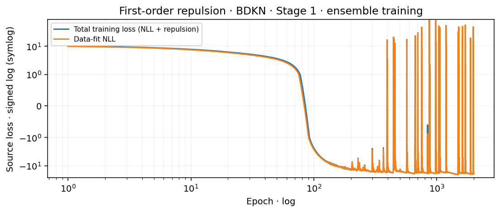
X: log · Y: signed log
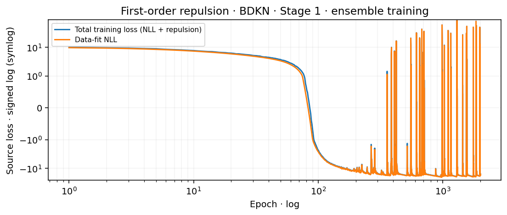
X: log · Y: signed log
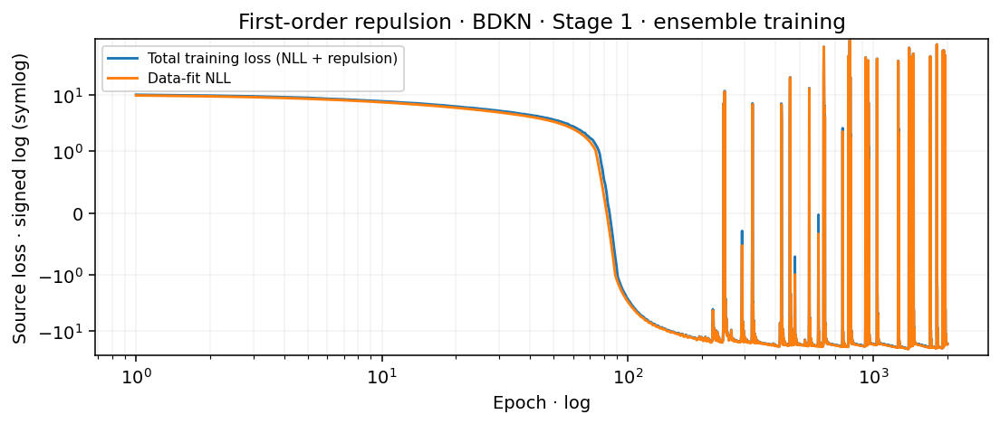
X: log · Y: signed log
Repulsion loss R only
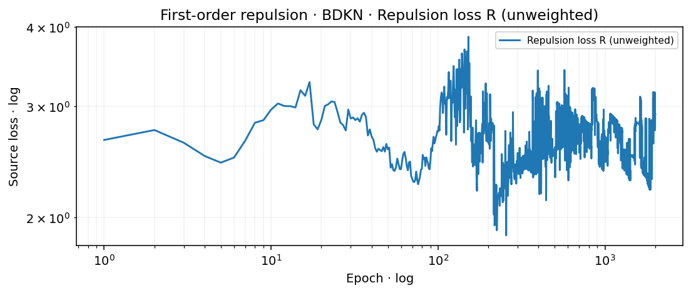
X: log · Y: log
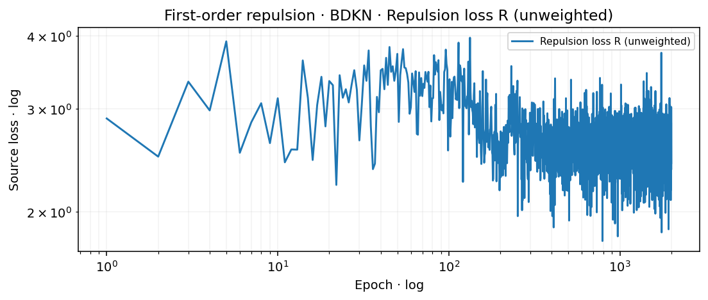
X: log · Y: log
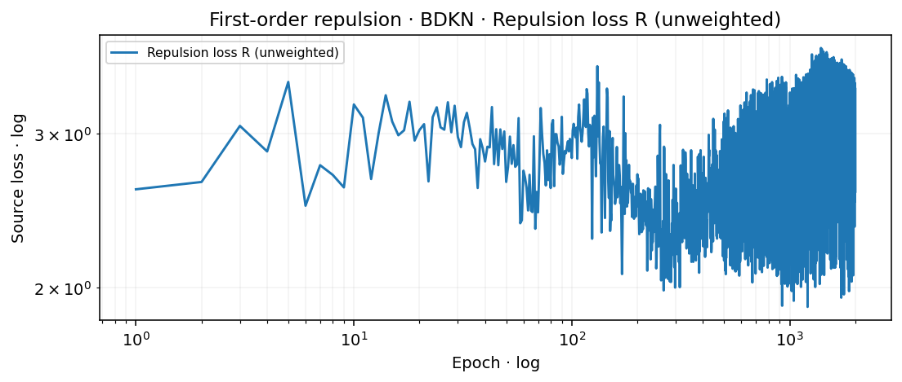
X: log · Y: log
Stage 2 · Bayesian marginal NLL
Weight repulsion · location-independent
The loss compares network parameters directly. These same results apply to every location.
| Stage | RMSE | NLL | Training seconds |
|---|---|---|---|
| DE | 0.74346 | 68.58101 | 6.04 |
| BDKN | 0.73573 | 7.42066 | 6.17 |